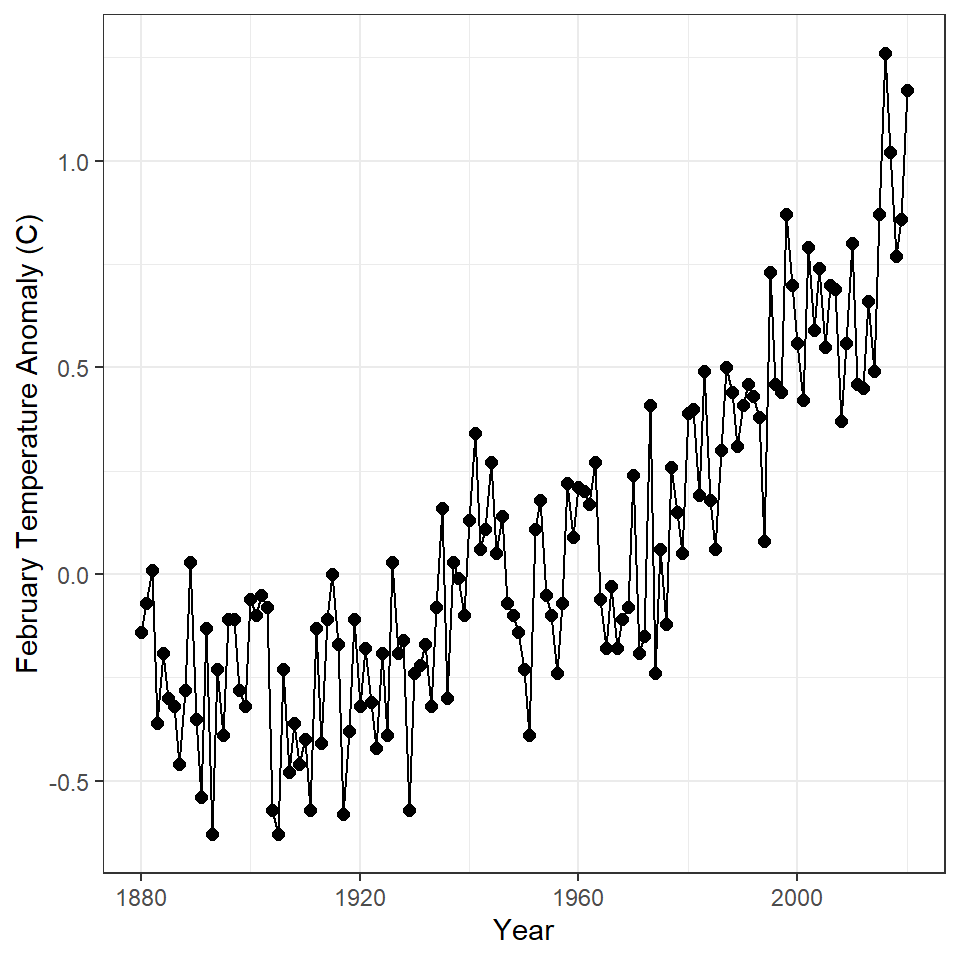
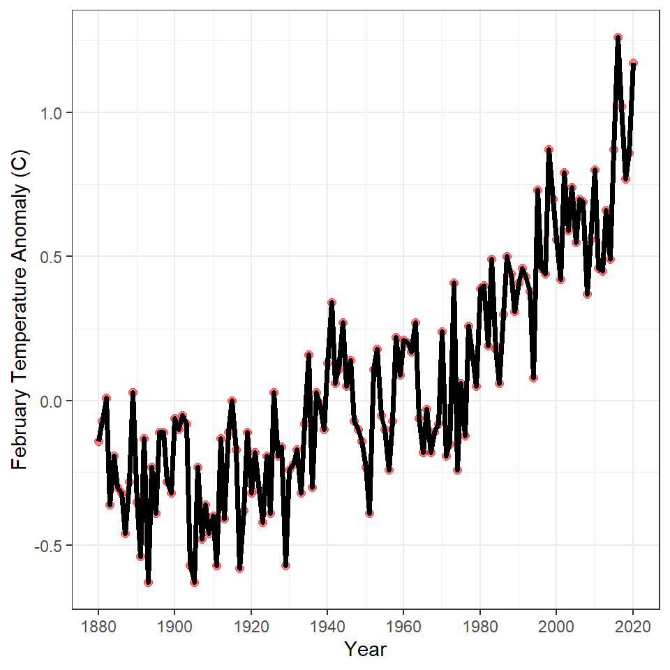
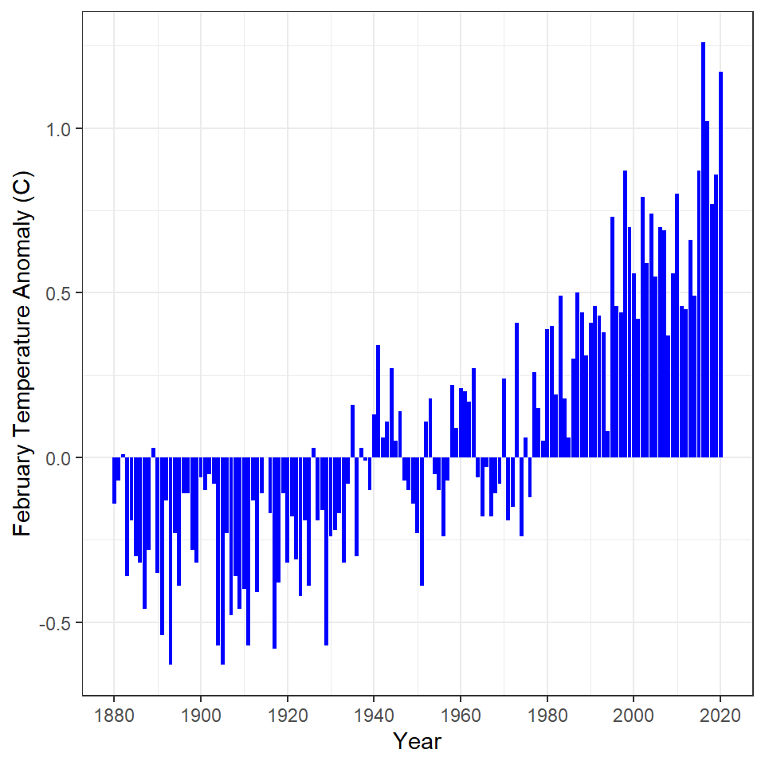
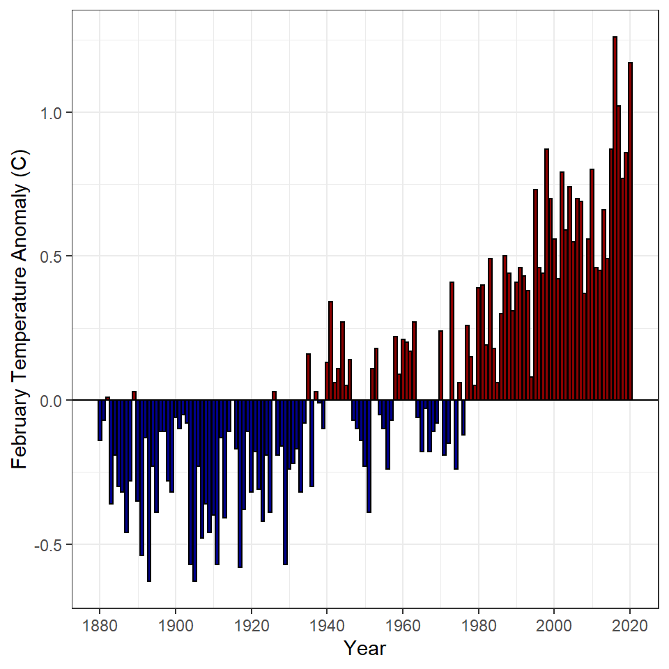

Background
 The National Oceanic and Atmpospheric Administration (NOAA) maintains a database of global land and sea temperatures. The data can be accessed from their Climate at a Glance website. Their defaut settings show the global temperature anomaly (difference from a long-term average) for February. These data can be downloaded from their website with the following code.
The National Oceanic and Atmpospheric Administration (NOAA) maintains a database of global land and sea temperatures. The data can be accessed from their Climate at a Glance website. Their defaut settings show the global temperature anomaly (difference from a long-term average) for February. These data can be downloaded from their website with the following code.
gt <- read.csv("https://www.ncdc.noaa.gov/cag/global/time-series/globe/land_ocean/1/2/1880-2020/data.csv",skip=4)
Annual Temperatue Anomaly 1
Construct ggplot2 code to match the graph below (as closely as you can).

Annual Temperatue Anomaly 2
Construct ggplot2 code to match the graph below (as closely as you can). [HINT: Copy and then modify the code you constructed from above.]

Annual Temperatue Anomaly 3
Construct ggplot2 code to match the graph below (as closely as you can).

BONUS – Annual Temperatue Anomaly 4
Perform an internet search to determine how to add a solid black horizontal line at 0 to each of the graphs above (see the line in the graph in the next section).
BONUS – Annual Temperatue Anomaly 5
Construct ggplot2 code to match the graph below (as closely as you can).
